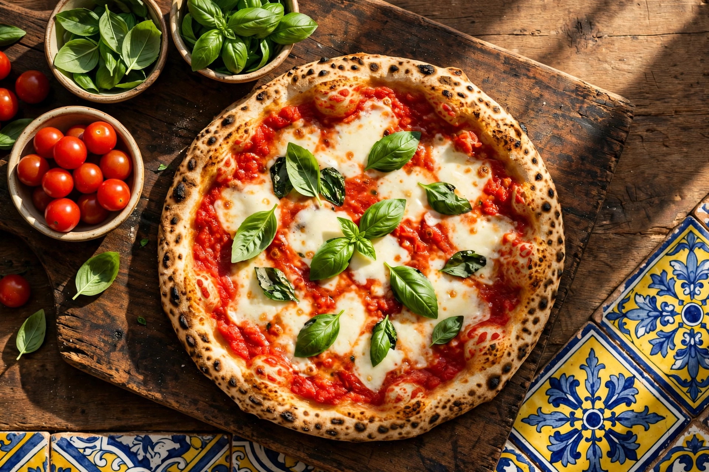
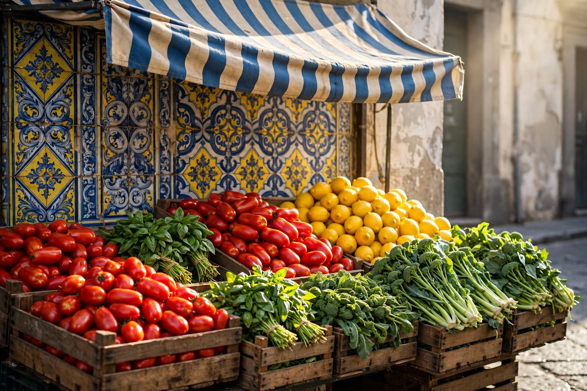
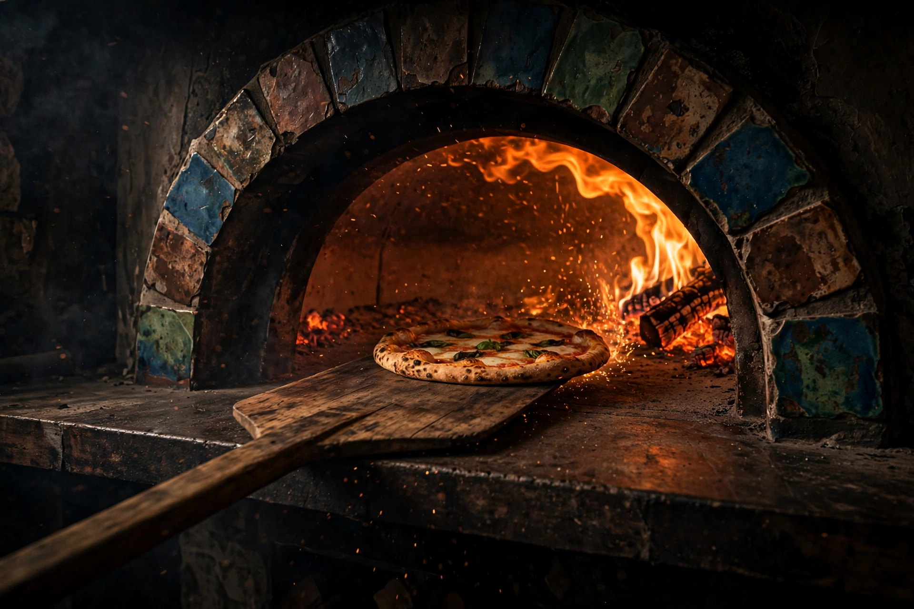
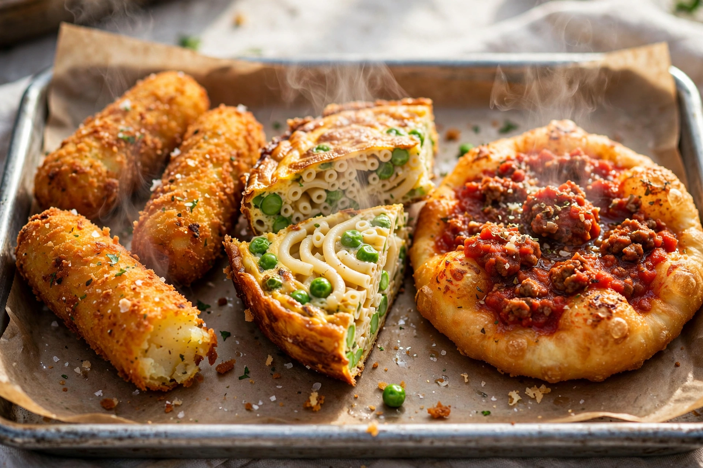
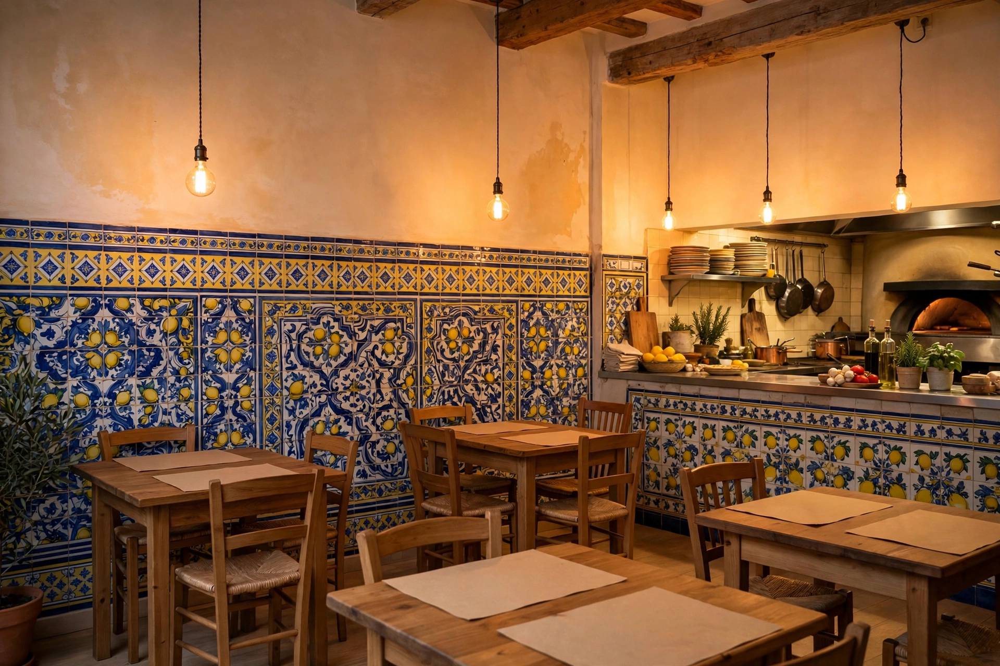
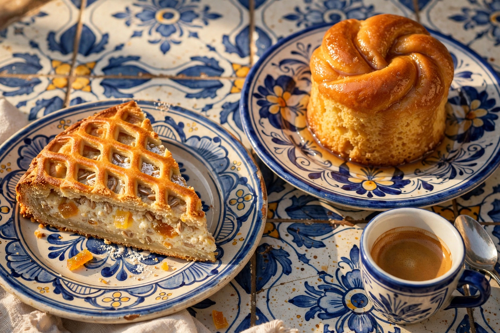

Crocche di patate
Provola, parmigiano e pepe
2,50 €Rione Sanità · Fuori Porta San Gennaro
Pizzeria e trattoria tradizionale napoletana dei fratelli Grossi, nel cuore del rione Sanità: dalla margherita alle pizze nate ai banchi del mercato.
il lunedì il forno riposa

Banco nº 0 · L’attesa
A Napoli la pizza si aspetta così: piccoli, dorati, da mangiare in piedi o appena seduti. Prezzi dal menù della casa.
Provola, parmigiano e pepe
2,50 €Besciamella, provola, carne macinata, piselli, parmigiano
2,50 €Il classico di casa, in versione fritta
2,50 €Riso arborio, salame Napoli, carne macinata, piselli, provola
2,50 €Pizza fritta con ragù napoletano e formaggio
2,50 €Polenta con cicoli, salame Napoli, formaggio
3 €Dorato e asciutto, come da tradizione
5 €Scorri per assaggiare tutto il banco →
Galleria





Immagini di atmosfera create per questa dimostrazione. Le foto vere della casa sono sulla sua pagina Facebook.
La casa
«La Campagnola è una pizzeria e trattoria tradizionale napoletana, situata nel rione Sanità, nel cuore di Napoli.»
La casa, nella sua descrizione ufficiale
La tavola comincia al mercato: il menù della casa dedica un’intera sezione ai banchi del Borgo Vergini, e ogni pizza porta il nome del suo venditore: il fruttajuolo, il casaro, il macellaio, il pescivendolo. È il quartiere, la Sanità, che detta la carta.
Nelle oltre duemila recensioni su Google ricorrono le stesse parole: impasto sottile e leggero, prezzi onesti, il servizio svelto e di casa. È il posto che i napoletani del quartiere consigliano a chi arriva da fuori, e dove, all’ora di punta, un po’ di fila è parte del rito.
| Lunedì | Chiuso |
|---|---|
| Martedì | 12:00-16:00 / 18:30-23:30 |
| Mercoledì | 12:00-16:00 / 18:30-23:30 |
| Giovedì | 12:00-16:00 / 18:30-23:30 |
| Venerdì | 12:00-16:00 / 18:30-23:30 |
| Sabato | 12:00-16:00 / 18:30-23:30 |
| Domenica | 12:00-16:00 / 18:30-23:30 |
Orari secondo il profilo Google della casa. TripAdvisor riporta orari leggermente diversi (12:00-15:30 / 19:00-23:00): per essere sicuri, una telefonata e via.